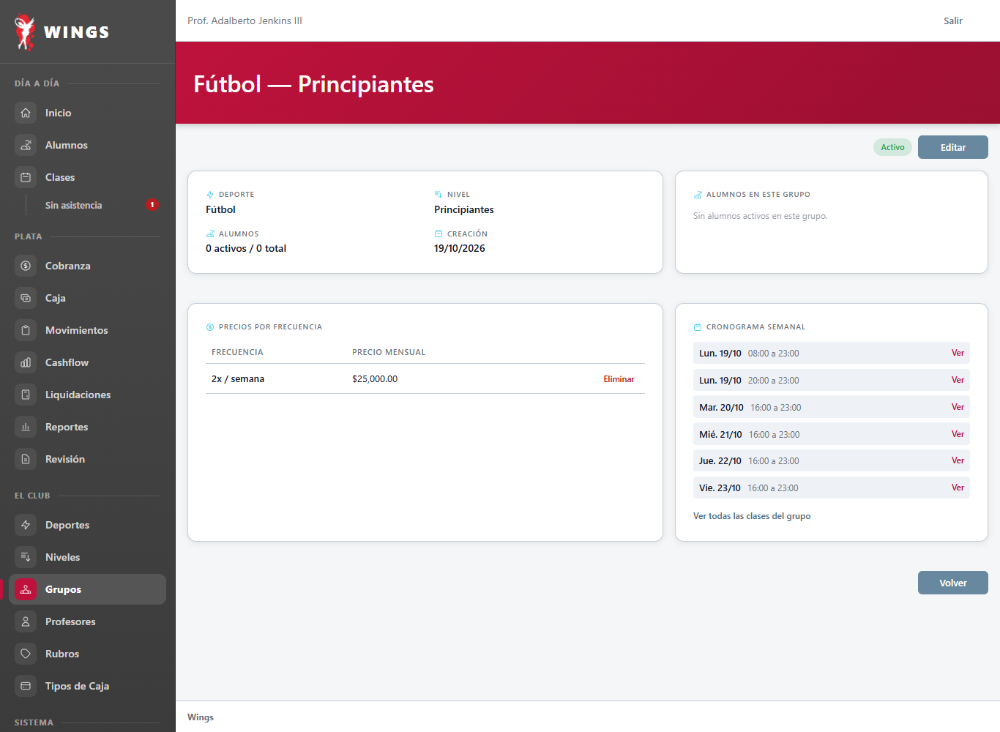
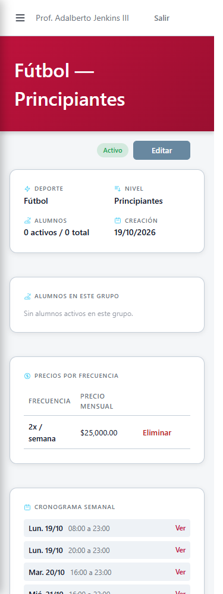
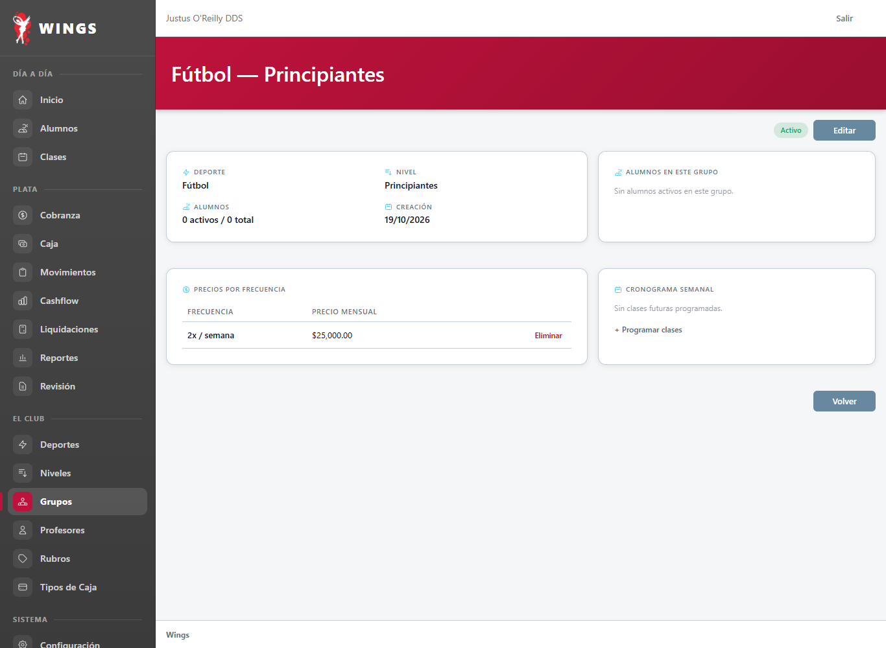
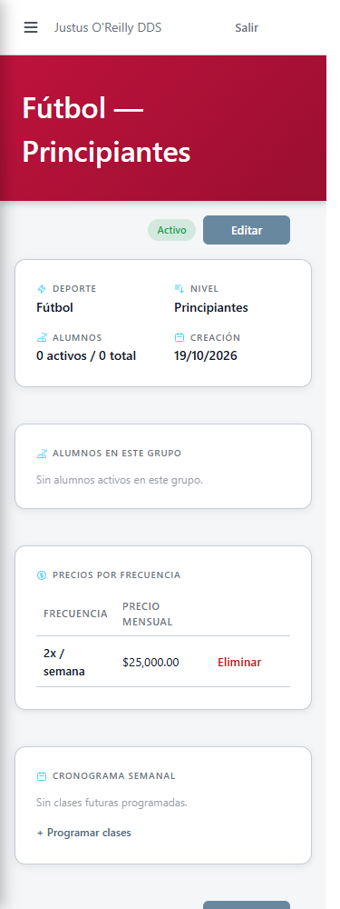
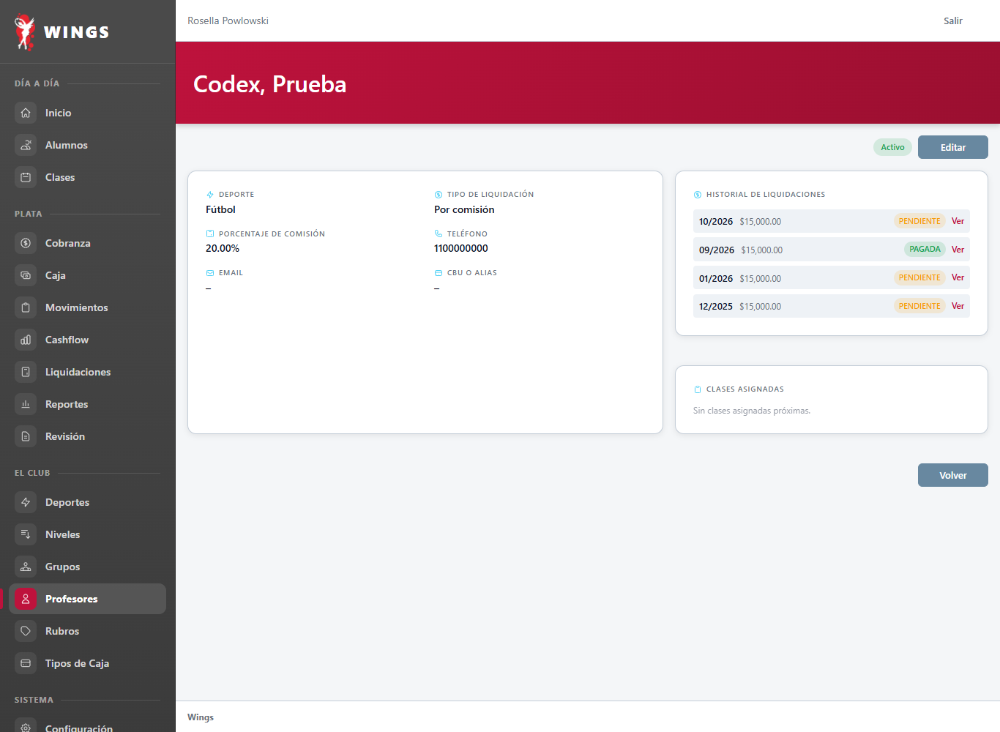
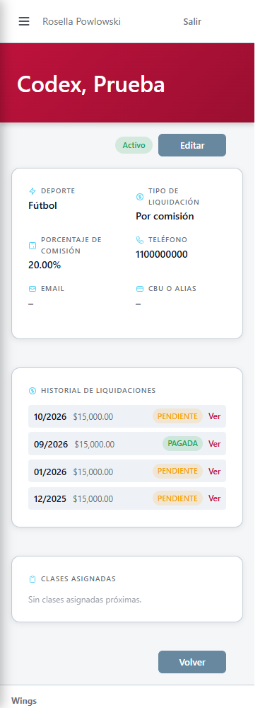
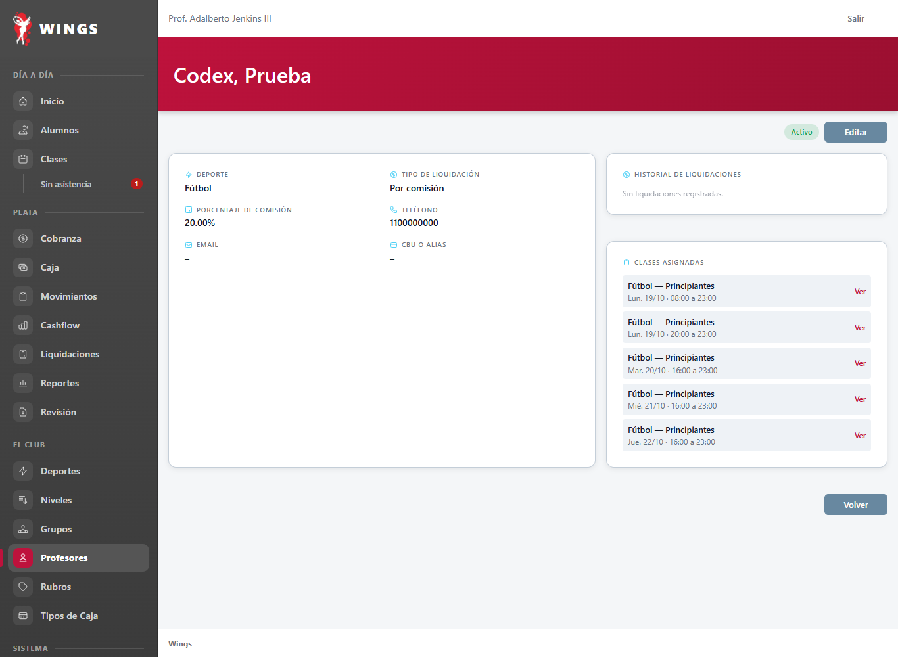
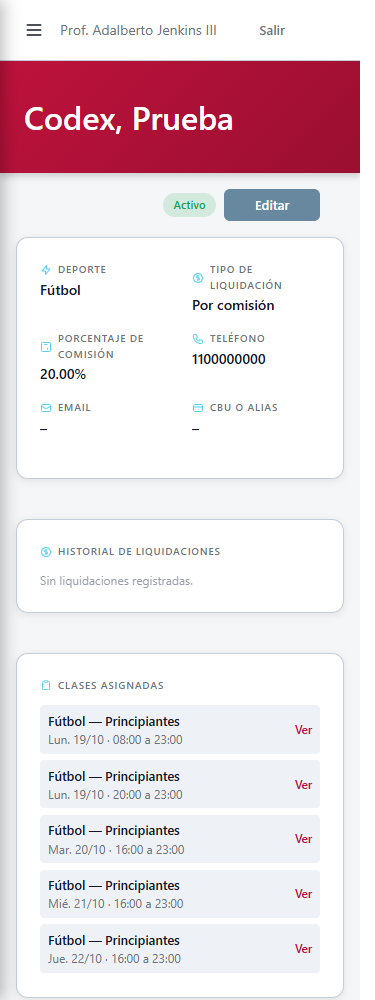
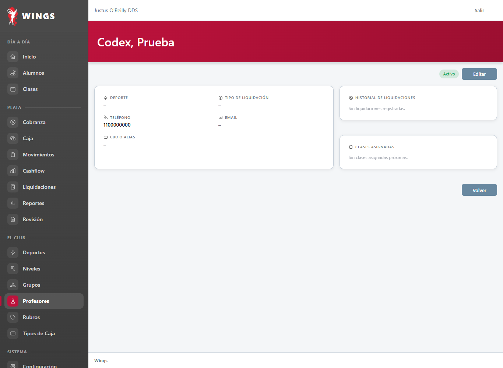
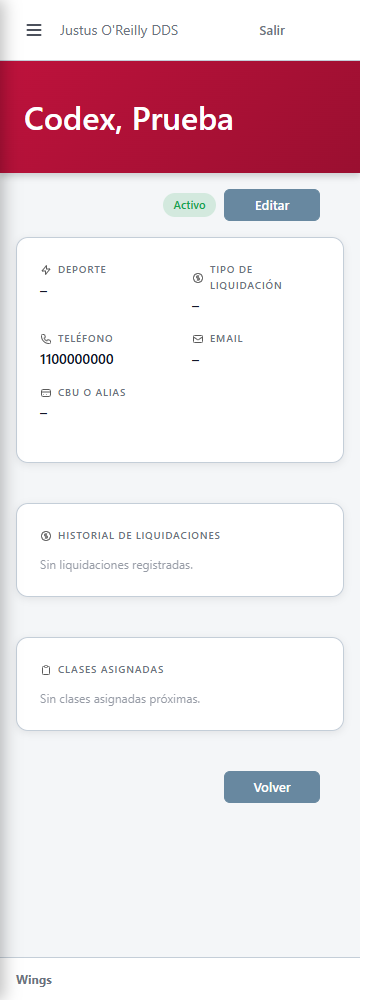

T68: fichas de grupo y profesor con datos reales
Implementó Gemini (e5b4695a). Capturas de Codex con datos de prueba, 19/10/2026.
Qué cambia: donde decía «Próximamente», ahora aparecen datos reales. En el grupo, sus próximas clases. En el profesor, sus liquidaciones y sus próximas clases. Si no hay datos, un aviso.
Por qué: lo pediste el 19/10 (DU-57): completar esas secciones, no quitarlas.
Pendiente aparte: en el historial del profesor, el importe va a pasar a mostrar el monto final ajustado. Se ve igual: solo cambia el número cuando hubo un ajuste.
1. Grupo con clases futuras


2. Grupo sin clases futuras


3. Profesor con liquidaciones


4. Profesor con clases asignadas


5. Profesor sin datos

